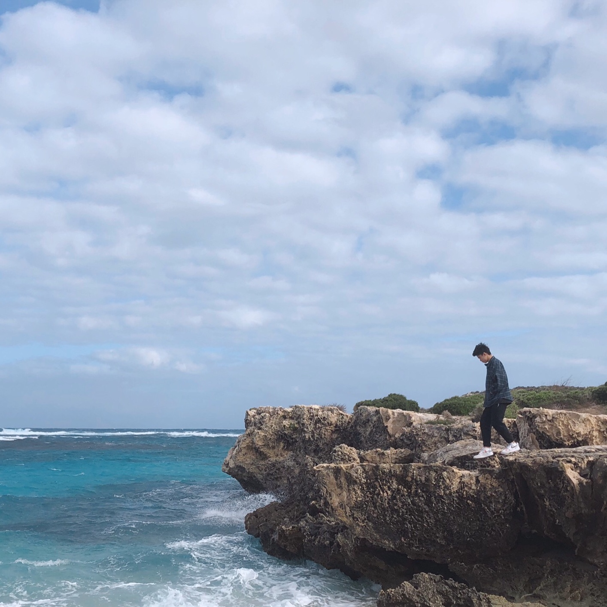
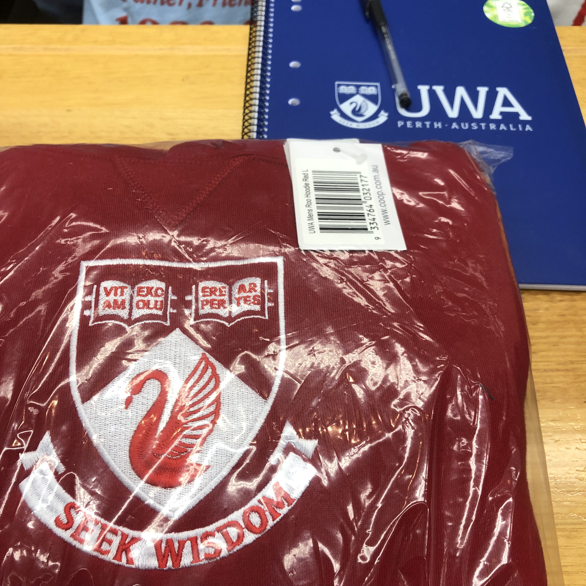
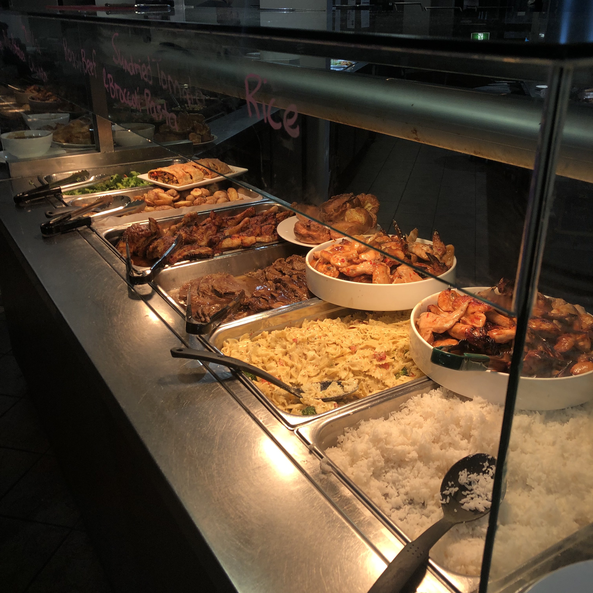
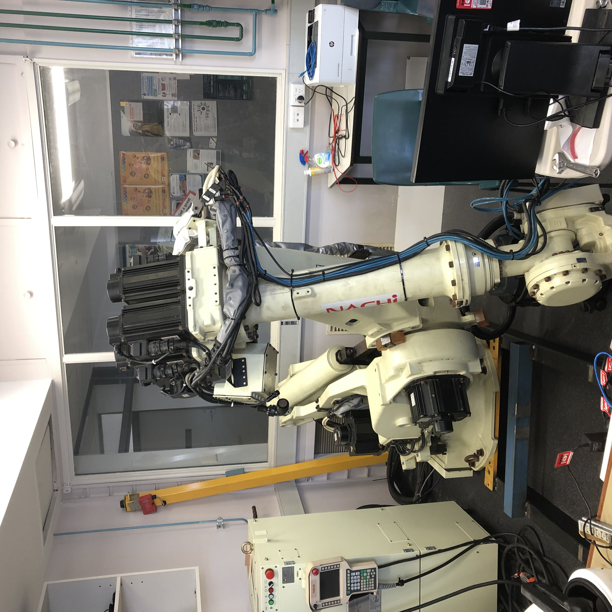
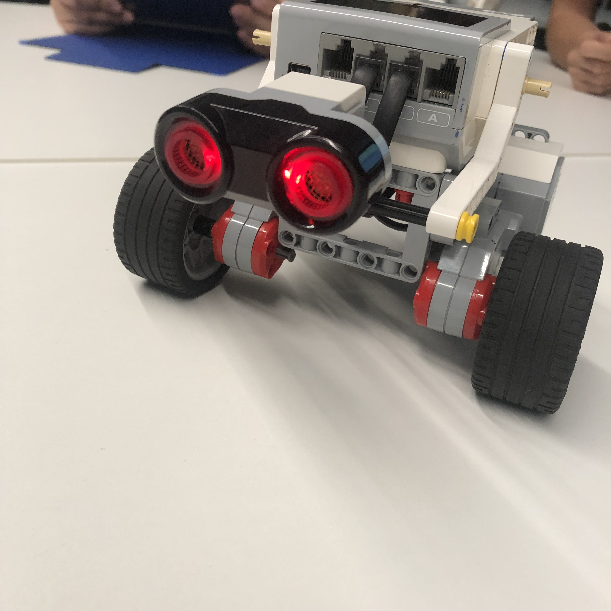
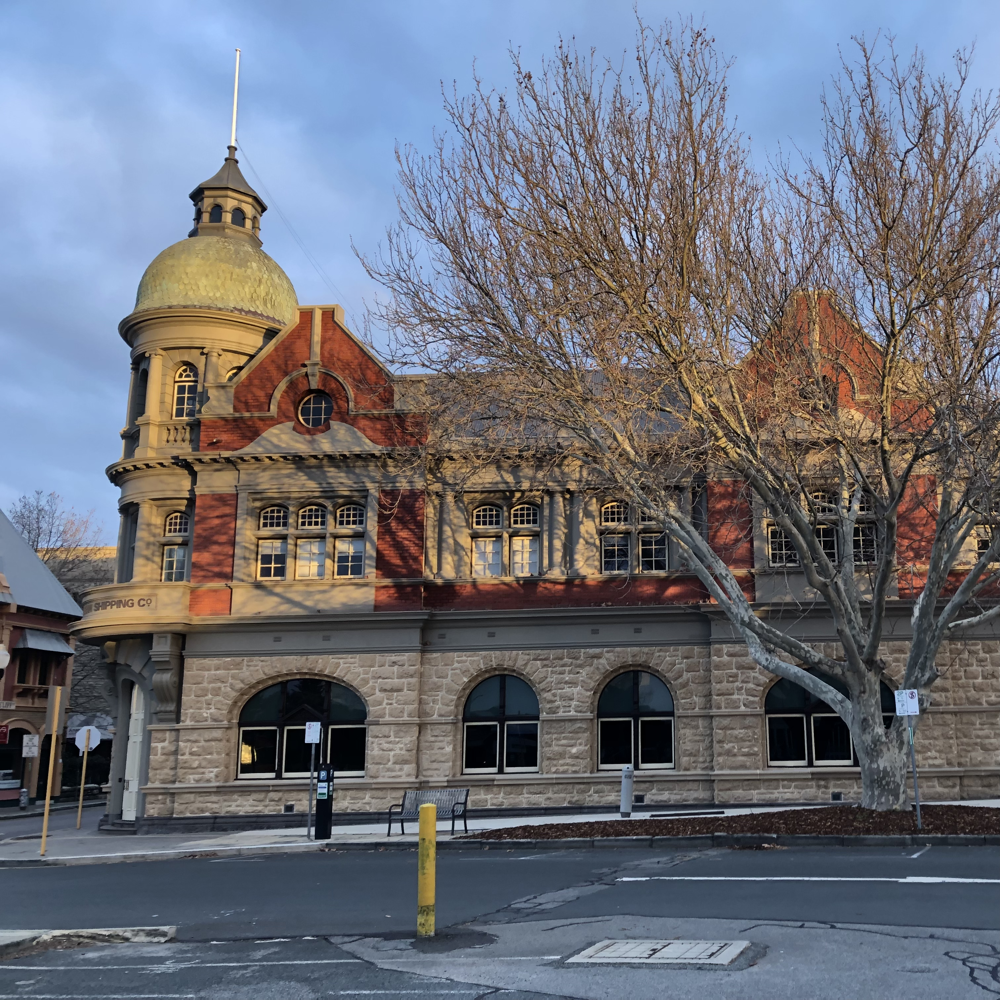

Trip to Perth.
I went to Perth in August 2019, and I wanted to document the trip to Western Australia through this blog.
The trip
 The trip was co-organized by the South China University of Technology and the University of Western Australia, so we stayed in student accommodation at UWA's Trinity school. The university arranged college and meals. We also went to the city center to try different cuisines ourselves. We heard that there was a trendy Italian restaurant called ciao, but unfortunately, we didn't try it during the trip. A typical meal costs under $10, or more than $20 in the city centre.
The trip was co-organized by the South China University of Technology and the University of Western Australia, so we stayed in student accommodation at UWA's Trinity school. The university arranged college and meals. We also went to the city center to try different cuisines ourselves. We heard that there was a trendy Italian restaurant called ciao, but unfortunately, we didn't try it during the trip. A typical meal costs under $10, or more than $20 in the city centre.
 We spent half of the two weeks at UWA's College of Engineering learning about engineering and touring the instruments and the other half of the week visiting local tourist attractions. The first week we saw the kangaroos in Whiteman Park, wandered around Kings Park and Swan Valley, and hit the Little Blue House, which ended up being dressed up as the Little Red House because Manchester United was also in Perth time.
We spent half of the two weeks at UWA's College of Engineering learning about engineering and touring the instruments and the other half of the week visiting local tourist attractions. The first week we saw the kangaroos in Whiteman Park, wandered around Kings Park and Swan Valley, and hit the Little Blue House, which ended up being dressed up as the Little Red House because Manchester United was also in Perth time.
 The tour itinerary has a day of free arrangement time. I originally wanted to go to Pink Lake, Wave Valley, the little train or lobster project, but unfortunately, all failed to achieve. But in the end, we chose to go to Rottnest Island and gained many memories. We bought round-trip electronic ferry tickets from Flying Pig and then used our student cards to purchase bus tickets after we got to the island, which was very convenient. The sea breeze of the isle was firm, and the beach was beautiful. We saw sea lions and a particularly cute quokka! The most exciting thing is: when we were having lunch, a seagull spilled half a plate of fries on the ground when we weren't looking, and the quokka came and ate them. I suspect they are premeditated, hahaha.
The tour itinerary has a day of free arrangement time. I originally wanted to go to Pink Lake, Wave Valley, the little train or lobster project, but unfortunately, all failed to achieve. But in the end, we chose to go to Rottnest Island and gained many memories. We bought round-trip electronic ferry tickets from Flying Pig and then used our student cards to purchase bus tickets after we got to the island, which was very convenient. The sea breeze of the isle was firm, and the beach was beautiful. We saw sea lions and a particularly cute quokka! The most exciting thing is: when we were having lunch, a seagull spilled half a plate of fries on the ground when we weren't looking, and the quokka came and ate them. I suspect they are premeditated, hahaha.
 We went to London Street the next week, where we had a long chat with a painting store owner. Felt the gold nuggets at the Perth Mint and visited some of the labs at the University of Western Australia, some oceanographic instruments, probably a separator.
We went to London Street the next week, where we had a long chat with a painting store owner. Felt the gold nuggets at the Perth Mint and visited some of the labs at the University of Western Australia, some oceanographic instruments, probably a separator.
 Finally, I also repurchased some health care products for my family. Mainly Swisse, Healthy Care, Blackmore are these famous brands. Lanolin is a good choice as a gift.
Finally, I also repurchased some health care products for my family. Mainly Swisse, Healthy Care, Blackmore are these famous brands. Lanolin is a good choice as a gift.
In general, the pace of life here is very comfortable, and people are pretty harmonious. For example, if you take a bus and can't find your card or run out of money, the driver won't rush you. When you get off the bus, the locals used to say thank you to the driver. It was all enjoyable. To describe Perth, I would say, "It's a great place to visit."
More Images









